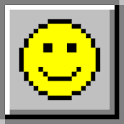

100
 00 : 00No High Score Yet!
The purpose of the game is to open all the cells of the board which do not contain a bomb. You lose if you set off a bomb cell. Every non-bomb cell you open will tell you the total number of bombs in the eight neighboring cells. Once you are sure that a cell contains a bomb, you can shift-Left Click to put a flag it on it as a reminder. The game ends when you clear all spaces without a mine and put a flag (shift-Left Click) on all cells with a mine.
To restart the game, just click on the yellow face. The timer is in the top right corner. The number of bombs yet to be found is in the top left corner (number of flagged bombs minus flagged spaces). Change the size of the board above! But remember the smallest game board is 8x8 and largest is 40x30. If the board looks distorted, try increasing your browser window! Happy mine hunting!